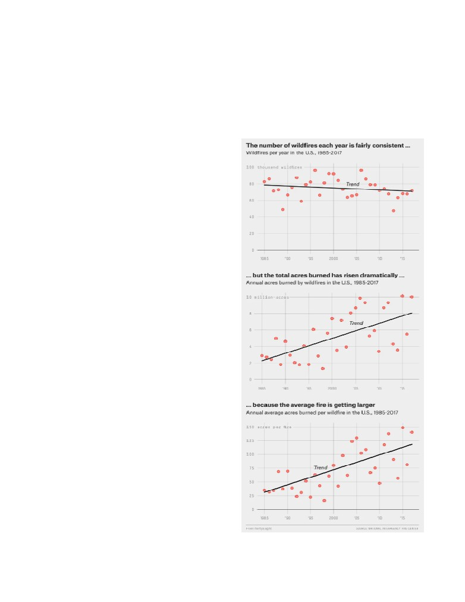
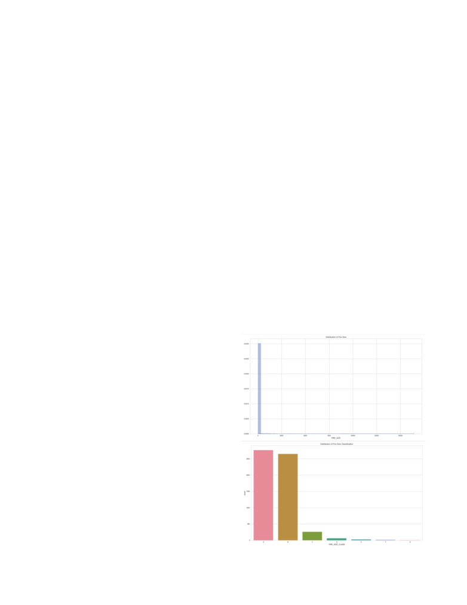
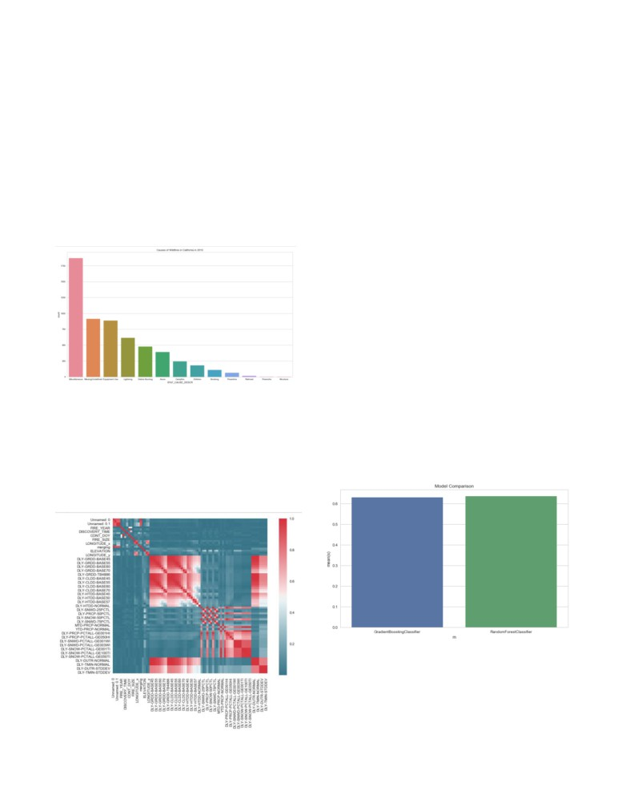

Predicting Wildfire Size Through Supervised Classification
Andreas Hindman
Oscar Avatare
Sharan
Saurav Kharb
Jhangiani
ABSTRACT
In tandem, an article by FiveThirtyEight in the summer of
Over the past thirty years, the damage caused by fires and
2018 reported, "Wildfires In The U.S. Are Getting Bigger."
money spent on preventing them has skyrocketed, leading
Accompanied with the article were a series of graphics,
to a need for better prevention and analysis of fires that
visible below.
have already occurred. As seen with the recent fires in
California, this need has only become more pressing.
Therefore, we examined fires from 2010 in California to see
if we could create a machine learning model to assess if
weather and geographic data could be used to accurately
predict the size of fires in California. Like previous
researchers, we found that there was little correlation
between the size of a fire and the weather features
surrounding it, making this a difficult task. However, we
were able to utilize a random forest model to predict the
size of fires in California in 2010 with an accuracy of 63%.
INTRODUCTION
Recent media coverage seems to echo the nation's growing
concern over the impact of wild fires. Cumulatively, the top
10 fires in California have set aflame to millions of acres
and damages thousands of structures.1 Depending on their
location, some of the larger California wild fires have
claimed the lives of dozens. In mid-November of 2018, the
Camp Fire in northern California killed 85 people.2,6 The
alarming death tolls alone provide enough reason to attempt
to predict the potential impact of wild fires. Environmental
and economic damages are also a concern for homeowners,
residents, insurers, governments, and nearby communities.
For these reasons, it is no surprise that efforts to predict the
behavior and effects of wildfires have already been made.
A 2016 report by the U.S. Fire Administration shows a
general decrease in fire-related death trend.3 This could be
attributed to advancements in predictive and preventative
technology, medical technology and techniques, or safer
construction regulations/guidelines. However, previous
attempts at predicting the behavior of wildfires have
suffered from a lack of funding. This means that the
practical applications of the models described in literature
are lacking.4 Additionally, much of this research (and it's
associated models) pre-dates the scientific research showing
that "wildfire activity increased suddenly and markedly in
the mid-1980s, with higher large-wildfire frequency, longer
wildfire durations, and longer wildfire seasons." — In fact,
wildfire activity in the Western United States forests is
thought to have increased in recent decades due to
"increased spring and summer temperatures and an earlier
spring snowmelt."5
The devastating and unpredictable nature of wildfires puts
the lives of thousands of homeowners, firefighters,
respondents, at risk.
These graphics tell us a scary story, where the size of the
study wasn’t climate related. The other study is important
fire is becoming more and more important as each fire is
because the increasing wildland-urban interface creates
more dangerous than the one before.
more damage that fires can cause, as well as providing
additional area in which the fire can burn that is artificially
The purpose of this project is to better predict the size of
created.
wildfires in California. Due to the changing climate, the
problems caused by wildfires in the western United States
METHODS
and California specifically are more pertinent than ever.5
As outlined before, the problem we selected to address was
Accurate prediction models will allow communities to
the rapid increase in size of extreme wildfires. We decided
evacuate individuals and families at the appropriate time
to approach the problem by leveraging past data to try and
and place. As visible from the graphics above, it is
predict the size of the wildfire.
imperative to solve this issue. This project limits the scope
In order to address the problem at hand, we broke the
of the models to California wildfires, but the features used
process down into 4 major steps: Data Selection, Data
by the model are not specific the region. These models and
Cleaning and Preparation, Feature Selection, Insights from
techniques could be applied to any geographical locations
Exploration, and Modeling
that experience wildfires, assuming similar data is
attainable. Models or technologies that provide accurate
Data Selection:
information regarding where and when to deploy
Our first step in our process was to find a dataset that we
containment efforts will have the potential to save
felt contained features and values that we felt would be
hundreds, if not thousands, of lives.
beneficial. Heavy discussion went into deciding the data
RELATED WORK
that would be most valuable to a model such as this one.
Related work to this project includes a University of
With the obvious effects of weather and climate data on the
California
Berkeley
study
size, spread, and impact of wildfires, it was evident that we
(https://forests.berkeley.edu/sites/forests.berkeley.edu/files/
should get some sort of climate data in tandem with
that
historical fire data with information on size, locations, and
examined vegetation types in California, and used Poisson
other factors that are important to predict. However, after
regression to model annual fire probability between 1950
struggling to find data that was consistent across multiple
and 2015. This paper found that the impact of climate
locations, we decided that it would be sufficient to solely
variables such as average maximum temperature, average
use California data in order to build the model out. We
annual precipitation, and annual topsoil moisture had
ultimately ended up selecting two separate data sets:
relatively little impact of the probability of a fire occurring.
Our primary data source for wildfire related data contains
However, they showed that there was continually increasing
records of 1.88 Million U.S. wildfires from the United
wildfire probability across all ownerships, firefighting
States Department of Agriculture's Forest Service. This data
agencies, reserve statuses, and vegetation types, and that
publication contains a spatial database of wildfires that
these factors were more relevant in predicting future fires
occurred in the United States from 1992 to 2015. It is the
than climate variables, although given the pace of climate
third update of a publication originally generated to support
change this is expected to be different in future studies.
the national Fire Program Analysis
(FPA) system. The
Another study from the University of Wisconsin-Madison
wildfire records were acquired from the reporting systems
of federal, state, and local fire organizations.
c02c5c7/t/5bbb8d22f9619ae1c47579af/1539018019587/Kr
To supplement our models, we also used California climate
amer_2018_WUI_IJWF.pdf) examined the cost of and
data that was requested from NOAA. This curated dataset
damage caused by fires in the Untied States. Over the past
contains various features related to temperature,
30 years, this has dramatically increased due to the
precipitation, humidity, snowfall, and other climate
increasing areas of wildland-urban interface, where
variables for California in 2010.
buildings and wildland vegetation meet. They found that
most threatened and destroyed buildings in the US were
Data Cleaning and Preparation:
within the wildland-urban interface, but this varied
After we had selected our data, we faced the monumental
considerably among states. They concluded that to prevent
challenge of combining the two datasets and then further
this issue from increasing in the future, that pre-emptive
preparing the data for the model. With regards to the
outreach could improve the likelihood of building survival
combination of the disparate datasets, there were 3 mutual
and reduce the human and financial costs of structure loss.
columns that we leveraged to join our data sets: Latitude,
This relates to our work because we were examining fire
Longitude, and Date. However, it was quickly evident that
size, and the climate factors that cause fires. These studies
the process would not be as easy as it seemed as longitude
relate to ours in this regard by seeing which factors are the
and latitude coordinates for the fire location and the climate
most predictive when examining fires, which to both our
data would never be exactly the same. In order to combat
surprise and the surprise of the researchers in the other
this, we developed a method of finding the longitude and

latitude location representing the climate location closest to
From the results, we empirically selected a couple of
the wildfire's location using a buffer on each coordinate to
features that made the most practical impact from a
increase chance of overlap of the coordinates.
humanistic standpoint and model standpoint, and continued
on to modeling.
Once the two datasets were combined, we were tasked with
dealing with a series of missing values. Missing values are
Insights from Exploration:
scattered (mostly) randomly throughout the dataset with the
Once we had cleaned and prepared data, it was finally time
exception of certain climate variables, some of which
to start implementing our model. Before we did so, there
contain mostly missing values. These missing values could
were a couple of important insights to gain from our
impact the statistical models if they mask any correlation.
exploration of our data:
One option we considered to handle these was to remove
rows with missing values entirely. However, while this
Fire size is presented in two ways in our dataset:
would be simple and make the data as pure as possible, this
FIRE_SIZE describes the continuous size in acreage while
would result in most of our rows being deleted and would
FIRE_SIZE_CLASS categorizes the fire on a scale from 'A'
not allow for sufficient data to develop our model on. As
to 'G', where 'A' classifies the smallest fires and 'G' being
long as an insignificant portion of the rows contain missing
attributed to the largest fires. Here is a breakdown of how
values, the models should not be affected dramatically. In
wildfires are classified based on acreage:
an effort to maximize our effective data and to limit the
'A' = '0-0.25 acres'
'E' = '300-999 acres'
scope of the project, we used a subset of the dataset that had
sufficient data.
'B' = '0.26-9.9 acres '
'F' = '1000-4999 acres'
A number of the features in the original wildfire dataset
'C' = '10.0-99.9 acres'
'G' = '5000+ acres'
could be used as predictor variables, as latitude/long
'D' = '100-299 acres'
coordinates, county, time of year, while others were
effectively different ways of identifying fires
(multiple
For this project, we decided to focus on a classifying model
ID's). We removed additional identifier columns, as well as
to predict the category that a fire might fall into based on
columns that did not have pertinent information. Part of our
pertinent variables. Due to the highly
(left) skewed
research question is to determine whether there is a
distribution of continuous wildfire size data, a regression
correlation between climate variables and fire size.
model would be more difficult to interpret. The
Specifically, wanted to see how temperature, precipitation,
classification scale takes the logarithmic distribution into
and humidity affect fire size, as well as any other climate
account and will lead to a more interpretable model. Below
features that can be accessed.
are two separate plots, depicting the visible difference
between FIRE_SIZE and FIRE_SIZE_CLASS.
Since we were able to get geographical climate data for
2010, and since 2010 had relatively few missing values, we
only used the 2010 subset of wildfire data. After that, we
used recursive feature elimination (RFE) to determine the
most effective set of features. Then, we cross-referenced the
top features with the set of columns based on the proportion
of missing values. Of the top features that were selected by
RFE, the highest proportion of missing values was 0.22, so
we removed climate features that had more than
25%
missing values.
Finally, we were able to handle the rest of the missing
values using forward fill. Since the remaining missing
values were continuous climate variables scattered (mostly)
randomly throughout the dataset without long streaks, this
method of handling missing values was appropriate.
Feature Selection:
As touched on briefly previously, in order to adequately
manage such a big dataset as well as run our model as
efficiently and accurately as possible, we ran a feature
selection model to determine which features are most
pertinent and relevant. Given the clean dataset, we then ran
a recursive feature elimination algorithm using a
RandomForestClassifier as the base model to determine
give us a list of the top ten features.

From these two distributions, we can see that the
While many of the climate variables correlate to each other
categorical size is significantly more interpretable because
(which is to be expected), there is relatively little
the categories are logarithmic and take the original
correlation with fire size, meaning that our climate
distribution into account. We can also make insights based
variables have a low chance of providing a rigorous model.
on these distributions: most wildfires can be categorized as
If this is the case, it will be revealed by the accuracy of our
'A' or 'B' fires. This means that relatively larger fires (class
models.
'C' and above, in this case) only occur in a fraction of
Modeling:
wildfire incidents. If the relatively few larger fires correlate
with the environmental variables that we have provided,
Given these insights, it was finally time for us to implement
then an accurate and interpretable model can also be
models to try and predict the size of a wildfire. Our decision
produced.
to use the Random Forest Classifier and the Gradient
Booster Classifier was guided by the SciKit-learn
In addition to climate variables, we predicted that the cause
documentation. Following this graphic, we landed on the
of a fire might be a predictor for fire size and impact.
decision to use SVC or Ensemble Classifiers, through
Shown below is a distribution of wildfire causes.
which we ultimately ended up on Gradient Booster
Classifier and Random Forest Classifier.
Random Forest Classifier:
We started with the Random Forest classifier. For each
model, the process was similar. We began with a simple
grid search to determine the best parameters to use in our
model, and leveraging the results from the grid search, we
trained the model.
Gradient Booster Classifier:
A similar process was conducted for the Gradient Booster
classifier, where we ran a grid search and leveraged the
results to train the model.
Contrary to our original hypothesis, the most frequent
(known) causes of wildfires are equipment use and
lightning while the least frequent causes are structure fires
RESULTS
and fireworks. However, we want to know which of these
Upon finalizing our models and testing their accuracy, we
result in the most damaging (or largest) fires.
were disappointed to see the outcome. The accuracy for the
Random Forest Model was a dismal, 0.6343, with the
In addition to the aforementioned feature selection, we used
Gradient Booster scoring a similar, 0.6295.
a correlation matrix to visualize which climate and fire
variables have a strong correlation with fire size, as seen
below.
DISCUSSION
3.
From the feeble results from our model, we were no doubt
4.
disappointed and conducted a bit of investigation into what
could have gone wrong. Ultimately, we went back to stage
5.
1 and observed the correlation matrix to visualize the
strength of relationships between variables to determine if
6.
there was an issue in the data selection process.
While many of the climate variables correlate to each other
(which is to be expected), there is relatively little
7.
correlation with fire size. This lack of correlation was
evident through the accuracy (or lack thereof) of our model.
This leads us to recognize that our fundamental flaw was
not within the model or the model selection, but rather, the
data selected had little correlation with the resulting
features, thus it was unable to accurately predict anything of
substance.
FUTURE WORK
Future work that could be done in relation to this dataset or
this topic are to either use the fire data and create a tool to
predict future fires based on the weather conditions that we
found, or to integrate other datasets into this current project
to allow for a more in-depth analysis of the factors that
cause these fires. For example, we would want to find better
data that is correlated with fires and thus be able to create
some sort of predictive tool to see where fires are most
likely to occur with better data. This would require more
granular data about the landscape where the fire occurred,
as well as data about state firefighting budgets, the funding
associated with individual counties and towns, and the
weather data of these individual areas as well. As we saw
from the first study we examined in the related work
section, this would require integrating in data about
firefighting, vegetation management, and land ownership.
Land ownership is crucial to understand, since fighting fires
is divided between federal and non-federal land. Likewise,
federal agencies typically only fight fires on federal lands,
while state agencies focus on non-federal lands, preventing
a clear comparison of the possible influence of federal and
state firefighting.
Even on the dataset we had, there were ways to examine the
data in a more granular or nuanced manner such as dividing
up fires by region or county and seeing if any specific
factors in these areas stood out against the fires in the state
as a whole, examining different factors in terms of weather
related to how fires started, and seeing if these factors
changed over the course of the year.
REFERENCES
1.
2.